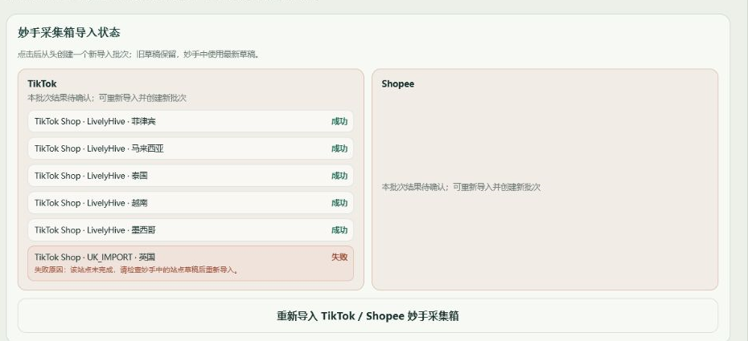
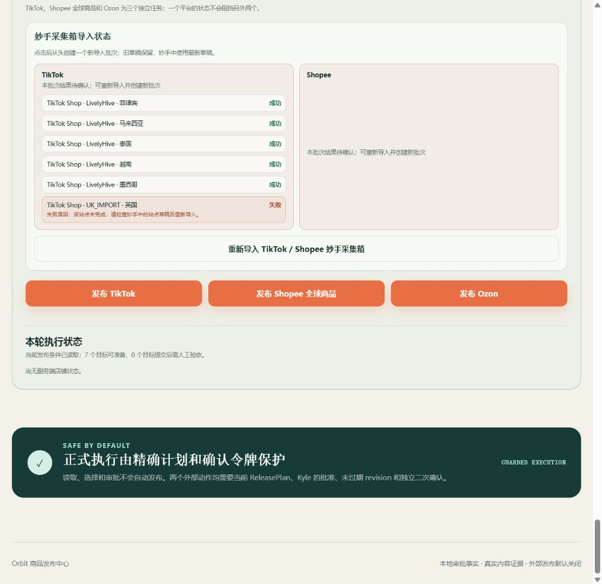
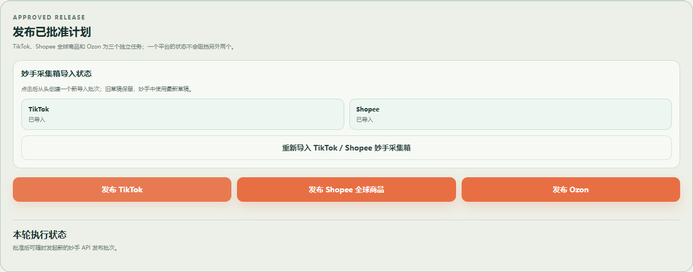
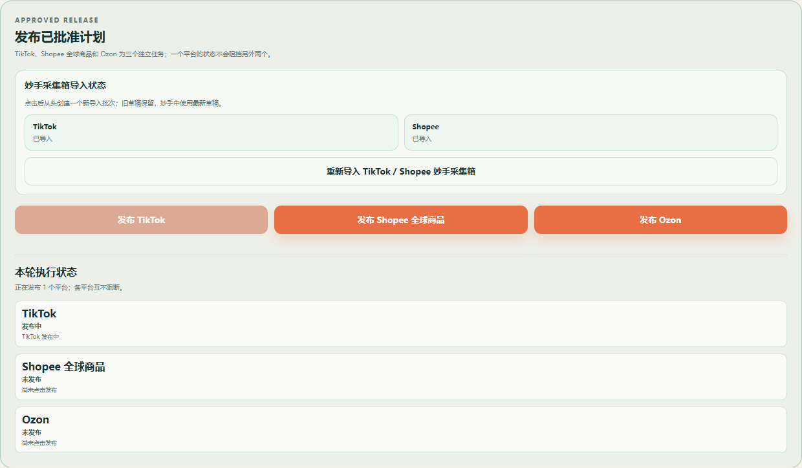
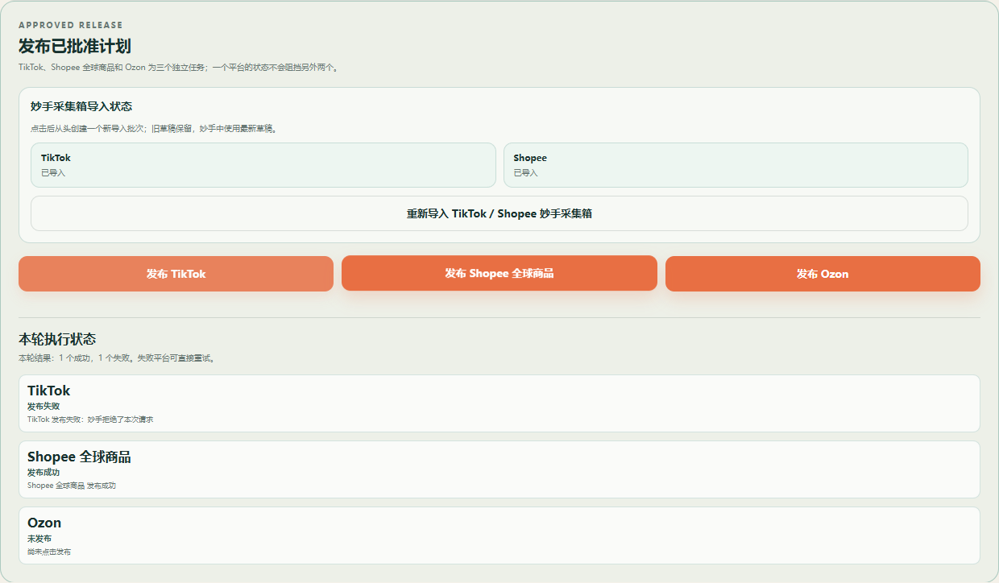
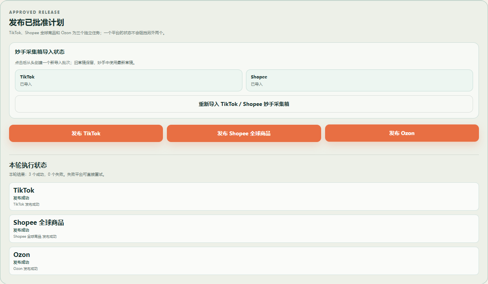
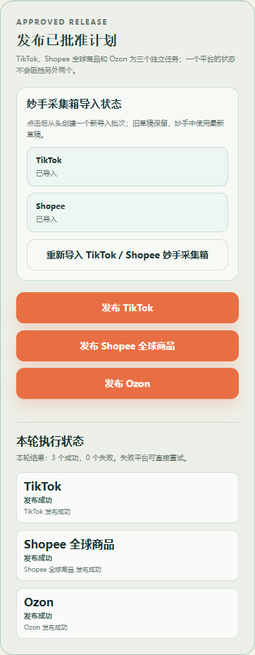

重新导入采集箱
- 读取当前批准的标题、SKU、图片、描述、类目、国家和价格。
- 创建一个新的 TikTok / Shopee 妙手采集箱批次。
- 旧草稿保留，妙手使用最新草稿。
- 页面只显示“导入成功”或“导入失败：原因”。
它只导入草稿，不发布任何店铺；旧草稿存在也不能阻止重新导入。
APPROVED RELEASE · BUTTON GUIDE
Kyle 只需要知道每个按钮长什么样、点击以后系统做什么，以及妙手返回成功或失败时页面显示什么。

截图来自当前运行中的商品发布页面，不是示意图。
“本轮执行状态”只显示刚才点击的平台处于上面哪一种状态，不再展示“可准备目标数”“服务端店铺状态”“待确认”“人工验收”或“对账”。
| 按钮 | 必须测试 | 正确结果 |
|---|---|---|
| 发布 TikTok | 成功 / 失败 / 再次点击 | 只显示成功或失败，不出现验收与对账 |
| 发布 Shopee 全球商品 | 成功 / 失败 / 再次点击 | 只影响 Shopee 全球商品 |
| 发布 Ozon | 成功 / 失败 / 再次点击 | 只影响 Ozon |
以下图片由真实 Chromium 点击页面按钮后自动生成，不是设计稿。测试验证：各平台结果互不继承、失败后可重新点击、成功后本次结束、没有发布后的轮询。为避免同一商品的妙手写入互相覆盖，服务端会串行处理同时发起的外部写请求。





未经 Kyle 书面确认，不得重新增加状态、依赖、确认步骤或自动阻断。